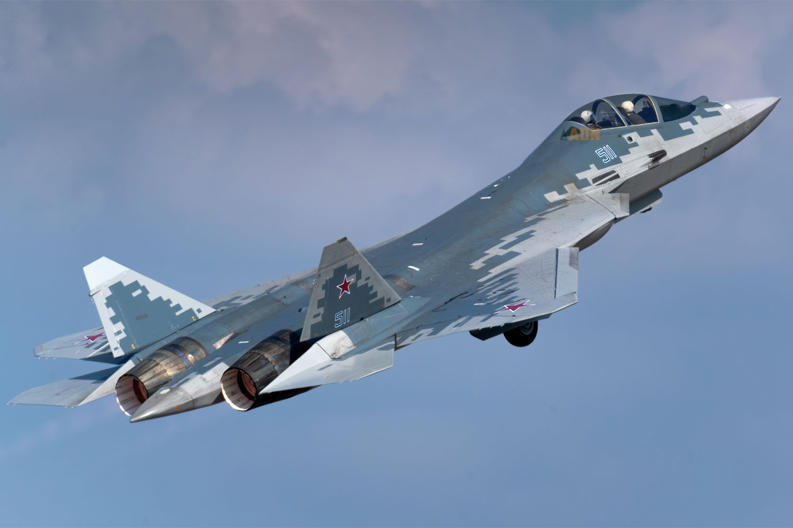
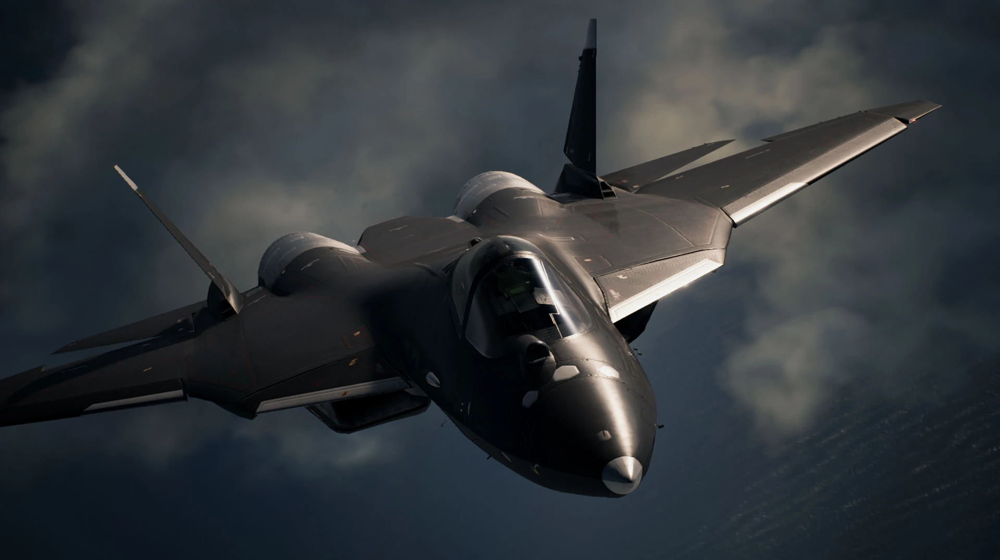

Sukhoi Su-57
| Descrição | |
|---|---|
| Função: | Multi-Função |
| Local de Origem: | Federação Russa |
| Fabricante: | Komosomolsk-on-Amur Aircraft Plant |
| Primeiro Voo: | 29 de Janeiro de 2010 |
| Introduzido em: | 25 de Dezembro de 2020 |
| Status: | Em Produção |
| Utilziadores: | Federação Russa |
| Produzido: | 2019 - Presente |
| Caractersiticas Gerais | |
| Tripulação: | 1 |
| Comprimento: | 20.1m |
| Altura: | 4.6m |
| Envergadura das Asas: | 14.1m |
| Area das Asas: | 78.8m² |
| Peso Vazio: | 18.000kg |
| Peso Bruto: | 25.000kg |
| Peso Máximo de Decolagem: | 35.000kg |
| Capacidade de Combustivel: | 10.300kg |
| Performace | |
| Motores: | 2 x Saturn AL-41F1 Turbofan Afterburnig |
| Empuxo: |
|
| Velocidade Máxima: | Mach 2 ou 2.135km/h |
| Alcance: | 3.500km |
| Alcance de Combate: | Não Disponivel ao Publico |
| Armamento | |
| Armas: | 1 x Canhão automatico de 30mm Gryazev-Shipunov GSh-20-1 |
| Hardpoint | 12 hardpoints sendo 6 x internos e 6 externos |
| Misseis |
Ar-Ar:
Ar-Terra:
|
| Bombas |
|
Sukhoi Su-57 um caça de Multi-Função Stealth de 2 motores, desenvolvido pela Sukhoi, obtido atraves do programa "Futuro Complexo Aeronáutico das Forças Aéreas da Linha de Frente"
"Perspektivnyy Aviatsionnyy Kompleks Frontovoy Aviatsii" que foi iniciado no ano de 1999 como uma alternativa mais mordena e acessivel como uma alternativa do Mikoyan Projet 1.44/1.42. Sendo o primeiro
caça Stealth da Federação Russa.

Sendo um caça de Multi-Função snedo capaz de executar missões de combate aéreo, ataque em terra e ataques maritimos, o Su-57 sendo uma dos varios caças russos, continuar com a tradição por assim
dizer de ser supermanobravel, bem como sendo um caça capaz de alcançar uma velocidae de Supercruseiro, com uma boa capacidae de carregamento interno. Com todas essas vantagens por assim dizer, ele deverá substituir
o Mig-29 e o Su-27, bem como será exportado.

Curiosidades
O Su-57 possui uma ampla aparição nos cinemas e jogos, como por exemplo no filme "Top Gun: Maverick", no qual o portagonista enfrenta dois Su-57 utilizando um F-14. o Su-57 apareceu também em "Ace Combat 7" como uma avião jogavel.

Acima um Su-57 em "Ace Combat 7"